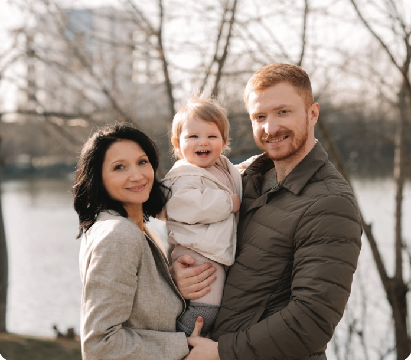

Pentru oamenii tăi
Acces la informație structurată pe etape, lecții video și instrumente de monitorizare, într-un singur loc.
 Hai să vorbim ↗
Hai să vorbim ↗WELLBEING PARENTAL PENTRU COMPANII
Fiecare copil merită o dezvoltare optimă. Fiecare părinte merită claritate. Oferă angajaților tăi un program complet de wellbeing parental, din sarcină până la 3 ani ai copilului.
Solicită oferta pentru compania ta ↗↓ Descarcă prezentarea PDFFamily Friendly Employer · GOO BEBE × Edenred Benefit

UN BENEFICIU CARE AJUNGE ACASĂ
Între întrebările despre sarcină, nopțile fragmentate și revenirea la serviciu, părinții au nevoie de repere. Family Friendly Employer aduce educația parentală și sprijinul pentru familie în programul de wellbeing al organizației.
 „
„Ideea de la care pornește GOO BEBE.
Acces la informație structurată pe etape, lecții video și instrumente de monitorizare, într-un singur loc.
Un mod concret de a arăta că sprijinul pentru familie face parte din experiența angajaților.
Un program cu lansare, materiale de comunicare și raport anual de activitate.
ACEEAȘI GRIJĂ. ETAPE DIFERITE.
Pentru angajate însărcinate, viitori tați și părinți cu copii până la 3 ani. Pentru că parentingul este o responsabilitate împărtășită.

01 / SARCINĂ
Un feed dedicat monitorizării sarcinii și ghidării săptămânale, cu educație contextuală pentru fiecare etapă.

02 / MAMĂ
Un spațiu dedicat stării și echilibrului mamei: emoții, sănătate, stil de viață și adaptarea la maternitate.

03 / BEBE
Informație despre creșterea și dezvoltarea copilului, lecții video pe ariile esențiale și instrumente de monitorizare.

04 / BENEFICII
Oferte, servicii și recomandări ale partenerilor GOO BEBE, potrivite pentru sarcină și primii ani ai copilului.
O PRIVIRE ÎN INTERIORUL APLICAȚIEI
Lecții video și resurse educaționale care aduc claritate în momentele importante. De la pregătirea pentru naștere, la relația cu copilul și dezvoltarea lui.


Exemple de lecții din prezentarea GOO BEBE. Conținutul video este disponibil în aplicație.
BACK TO WORK
Programul video Back to Work din aplicație îi ajută pe părinți să pregătească revenirea după concediul parental, cu repere practice pentru noua rutină a familiei.
Include sprijinul pentru revenire în programul tău ↗
ÎNTREBĂRI REALE. REPERE PRACTICE.
Un nou capitol, pentru întreaga familie.
DE LA BENEFICIU LA EXPERIENȚĂ
Prezentarea programului, workshop cu Olimpia Mesa despre momentele importante în dezvoltarea copilului și sesiune de întrebări și răspunsuri.
Abonamente GOO PLUS: conținut premium, cursuri video, ghiduri, instrumente și acces la resursele aplicației.
Kit pentru HR: email de lansare, afișe, bannere digitale, materiale pentru employer branding și insigna programului.
Raport cu numărul angajaților înscriși și rezumatul activității programului pe parcursul anului.
Insigna Family Friendly Employer și certificatul de partener GOO BEBE pot susține comunicarea despre implicarea companiei în sprijinirea părinților. Condițiile de utilizare se stabilesc în parteneriat.

ARHITECTURA EDUCAȚIONALĂ
Olimpia Mesa, fondatoarea GOO bebe & mama, coordonează arhitectura educațională a aplicației. Fiecare resursă este integrată într-un parcurs clar și coerent, potrivit etapei în care se află părintele.
Programul corporate aduce această experiență în companie, alături de workshopul de lansare, sesiunea de întrebări și răspunsuri și materialele dedicate echipei HR.
PE SCURT, PENTRU HR
Angajate însărcinate, angajați care se pregătesc să devină tați și părinți cu copii până la 3 ani. Programul susține întreaga familie.
Da. Companiile pot alege doar abonamente sau programul complet, cu servicii de implementare și comunicare. Configurația se stabilește împreună.
Stabilim beneficiarii, pregătim lansarea și comunicarea internă, apoi activăm accesul și urmărim activitatea programului. Serviciile și calendarul sunt incluse în oferta agreată.
Solicită o ofertă în funcție de numărul beneficiarilor și serviciile dorite. Vei primi separat costurile abonamentelor, implementării și condițiile comerciale aplicabile.
Este programul de wellbeing parental GOO BEBE, însoțit de materiale care comunică participarea companiei. Insigna programului nu este prezentată ca o acreditare independentă.
FAMILY FRIENDLY EMPLOYER · GOO BEBE × EDENRED BENEFIT
Adu wellbeingul parental în compania ta. Solicită propunerea pentru echipă sau descarcă prezentarea și du conversația mai departe, către colegi și conducere.
mihai.sirbu@ubris.com